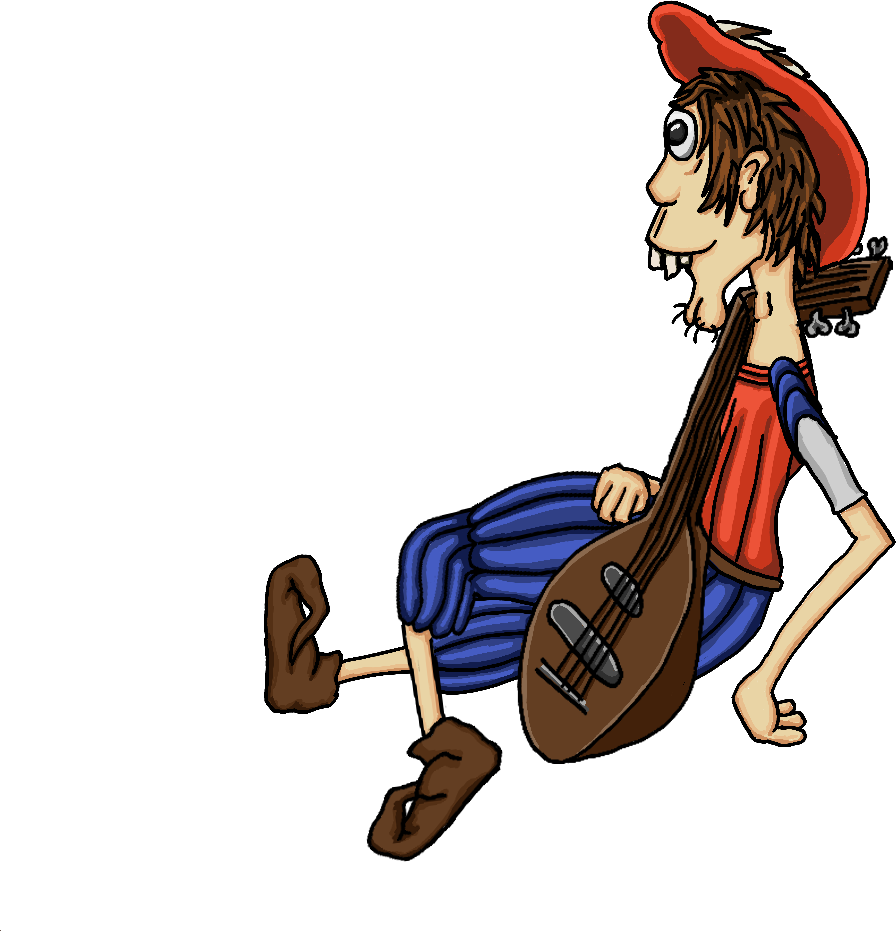
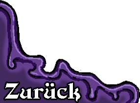
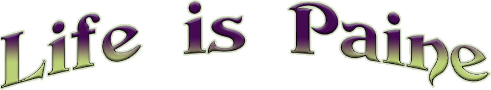
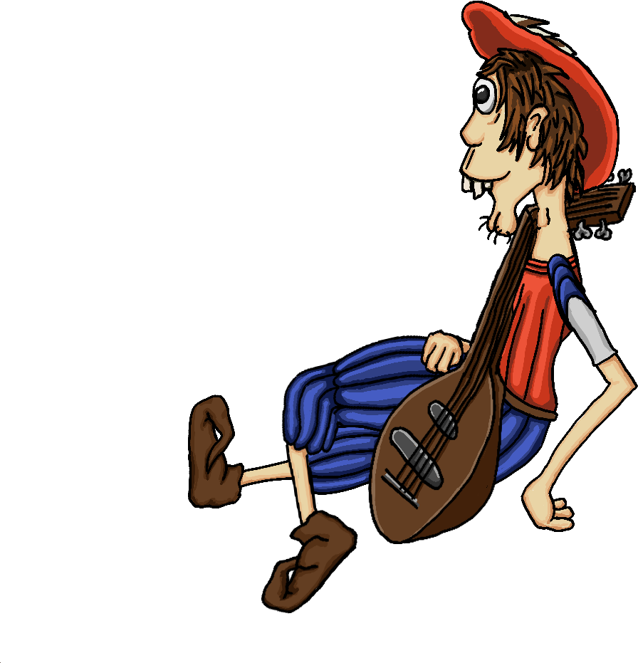
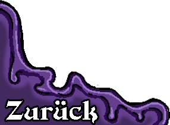
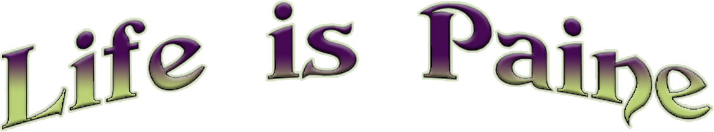

Life is Paine is a Point and click Adventure inspired by classic Adventure games like “Monkey island”
and “Edna&Harvey the Breakout”.
What is the story about?
The story revolves around a Bard named Vidus Paine who has lost his singing voice and is trying to reclaim it. The story is mostly comedic with a few downbeats.What makes the game special?
All items are combinable with each other and items in the game which most of the times produce a unique answer or joke, fitting the combination, if you combine them. Just like in the good old adventures. The Game features comedic poems and wordplay, fitting the main character of the story as he is a Bard.Who is designing the game?
The Game concept and development is conducted by Jonas Autenrieth.
Did you find a bug and want to help getting rid of that bug, or do you have any other enquiry then
contact me via
Mail
or Facebook
or Facebook
Do you like the game and want to support me?
Then check out my Patreon page.
Or help financing the game via Kickstarter.
Then check out my Patreon page.
Or help financing the game via Kickstarter.